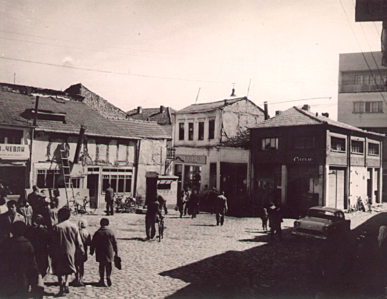
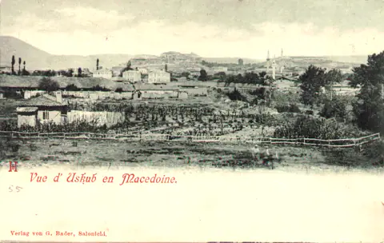

Zelena tržnica
- Produkcija
- UFUŽ in Dokumentarni film Praga
- Scenarij in režija
- Slavko Janevski in EMAN CANERA
- Leto
- 1959
- Trajanje
- 00:18

Skopske krščanske hiše - 1870.

Del stare skopske čaršije, 1902. Vrsta trgovin s polkni pred Kuršumli hanom. V ozadju se vidi stolp Gülşen hamama.

Glavna ulica med nastajanjem (danes ulica „Makedonija“, ki poteka od današnjega Muzeja mesta Skopje proti Kamnitemu mostu). Desno se vidi katoliška cerkev v gotskem slogu, levo pa posamezne stavbe. Del pri Kamnitem mostu je bil tlakovan leta 1911, da je lahko šel mimo sultan Murat V., ki je obiskal Skopje pred odhodom na Kosovo polje.

Fotografija je posneta s stavbe stare železniške postaje - današnjega Muzeja mesta Skopje, zgrajene leta 1873 v času Osmanskega cesarstva. V ospredju je dostop do postaje z ograjenimi zelenicami. Naprej se nadaljuje glavna ulica proti trgu. Na začetku ulice levo je hotel „Rusija“.

Pogled proti glavni ulici „Makedonija“. Slavolok je postavljen v čast nekemu pomembnemu gostu. Levo od njega je hotel „Rusija“. - začetek 20. stoletja.

Glavna ulica s hotelom „Moskva“ - 1920-a leta

Glavna ulica, današnja Makedonija, ki vodi od današnjega Muzeja mesta Skopje proti trgu. Na koncu ulice se vidi Oficirski dom, desno od njega pa Gospodarska trgovinska zbornica - 1930-a leta.

Glavna ulica, posneta proti današnjemu Muzeju mesta Skopje - okoli 1920.

Glavna ulica (današnja Makedonija), od trga proti železniški postaji - okoli 1920.

Glavna ulica Makedonija, od današnjega Muzeja mesta Skopje proti trgu. Levo je hotel Bristol, desno se vidi Krangova palača. (1930-a leta)

Glavna ulica, ki vodi od današnjega Muzeja mesta Skopje proti trgu. Posneto pri današnjem hotelu „Bristol“ in Krangovi palači. V ozadju se vidi Oficirski dom - okoli 1935.

Glavna ulica, ki vodi od današnjega Muzeja mesta Skopje proti trgu. Stavba na vogalu je Krangova palača - 1930-a leta.

Krangova palača. - 1930-a leta.

Ulica ob nabrežju na desni strani Vardarja. - 1930-a leta

Ulica v starem delu mesta proti stari čaršiji - konec 19. stoletja.

Ulica od Kamnitega mostu proti stari čaršiji. - 1920-a leta

Ulica v starem delu mesta, proti četrti Čair. V ospredju sta postajališče kočij in stara turška pipa. V ozadju so stavbe stare ljudske arhitekture - 1920-a leta.

Kamniti most proti stari čaršiji. Levo vrsta trgovin, desno stavba zobozdravnika dr. Rubena in vrsta trgovin proti stari čaršiji - okoli 1935.

Ulica „Kruševska“ v četrti Pajko, 1920-a leta.

Te ulice danes ni več. Potekala je vzporedno z glavno ulico, od trga proti stari železniški postaji (današnji Muzej mesta Skopje) - 1920-a leta

Glavna ulica (današnja „Makedonija“) - 1920-a leta.

Ulica stare čaršije v Skopju. V ozadju Mustafa-pašina mošeja. - 1930-a leta

Ulica v stari čaršiji v Skopju. V ozadju se vidi Mustafa-pašina mošeja. - 1930-a leta

Ulica „Cvetan Dimov“ v naselju Čair, 1940-a leta. V ozadju se vidi Mehmed-pašina mošeja.

Skopje, 1950-a leta. Vhod v staro skopsko čaršijo - lokacija blagovnice „Most“. V ospredju je skupina trgovin, porušenih po potresu leta 1963. Levo se vidi del skopske trdnjave - Kale. V ozadju je Mustafa-pašina mošeja.

Mali trg v stari skopski čaršiji, 1950-a leta.

Ulica 11. oktobra, posneta s trga proti današnji Skupščini R. Makedonije. V ozadju se vidi stara stavba Uprave za notranje zadeve. - 1950-a leta

Ulica 11. oktobra s Skupščino R. Makedonije na levi. Na levi se vidi tudi srednjeveški stolp. V ozadju fotografije se vidi del stavbe stare pošte. - konec 1950-ih let

Ulica „Goce Delčev“, posneta s trga. V ospredju levo se vidi del hotela „Makedonija“, ki se je porušil v potresu leta 1963. - 1950-a leta

Glavna ulica proti trgu. V ospredju je katoliška cerkev. - 1950-a leta

Glavna ulica v smeri železniške postaje (današnji Muzej mesta Skopje). Levo se vidi katoliška cerkev. - 1950-a leta

Glavna ulica „Makedonija“ proti trgu. - 1950-a leta

Skopje, 1950. Zahodni del glavne ulice. Na levi je hotel „Moskva“.

V ospredju je križišče ulice 11. oktobra in bulevarja Koča Racina. Desno od stolpa, ki je v gradnji, se vidi stara vojaška pekarna iz prve svetovne vojne - 1950-a leta

Križišče bulevarja Koča Racina in ulice 11. oktobra. - 1950-a leta

Ulica ob Mestni bolnišnici in Delavski univerzi - 1950-a leta

Ulica 11. oktobra - konec 1970-ih let, proti trgu „Makedonija“.

Pogled z ulice 11. oktobra proti trgu „Makedonija“. Levo so stanovanjske stavbe, desno stavba Elektrogospodarstva. - konec 1970-ih let

 Akvadukt4 razglednice
Akvadukt4 razglednice Kale30 razglednic
Kale30 razglednic Mostovi60 razglednic
Mostovi60 razglednic Nabrežje58 razglednic
Nabrežje58 razglednic Trg46 razglednic
Trg46 razglednic Stavbe66 razglednic
Stavbe66 razglednic Krščanski templji19 razglednic
Krščanski templji19 razglednic Muslimanske stavbe33 razglednic
Muslimanske stavbe33 razglednic Oficirski dom29 razglednic
Oficirski dom29 razglednic Gledališče28 razglednic
Gledališče28 razglednic Železniška postaja13 razglednic
Železniška postaja13 razglednic Šole36 razglednic
Šole36 razglednic Parki12 razglednic
Parki12 razglednic Tržnice18 razglednic
Tržnice18 razglednic Ulice38 razglednic
Ulice38 razglednic
Panorama I60 razglednic Panorama II30 razglednic
Panorama II30 razglednic Kolaži55 razglednic
Kolaži55 razglednic Poplave9 razglednic
Poplave9 razglednic Potres27 razglednic
Potres27 razglednic Skopje 200026 razglednic
Skopje 200026 razglednic